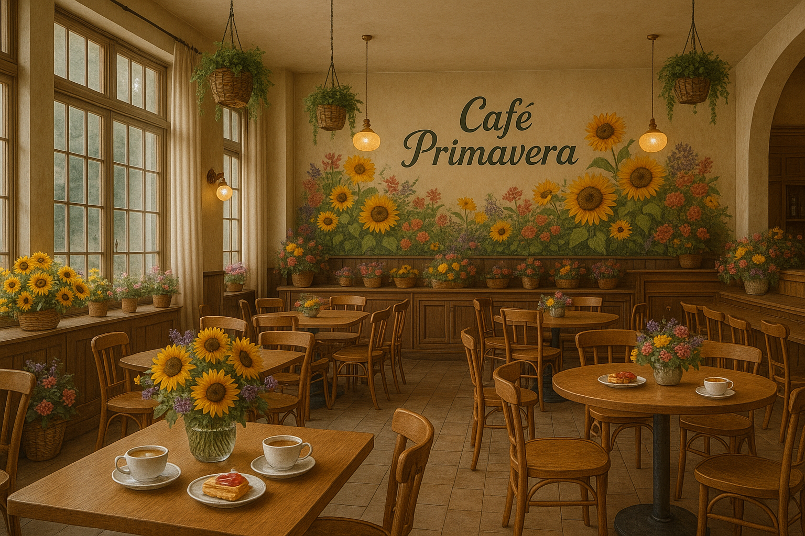
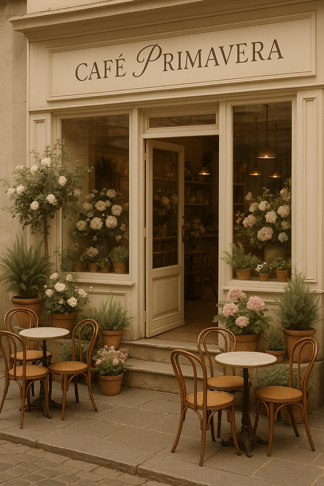

Un espacio donde el aroma del café de especialidad se entrelaza con la frescura de las flores artesanales.
Granos de origen único preparados con métodos artesanales. Espresso, latte, matcha y mucho más.
Ramos y arreglos florales con flores frescas de temporada. Composiciones personalizadas para cada ocasión.
Aprende el arte floral en nuestro espacio. Talleres para todos los niveles con material incluido.
Combina café de especialidad y flores en un regalo único. Perfecto para cualquier ocasión especial.

Espacio interiorCafé Primavera nació de la unión de dos pasiones: el buen café y la belleza floral. Creemos que ambas comparten la misma filosofía — la atención al detalle, la temporalidad y la capacidad de emocionar.
Nuestro espacio está diseñado para que te sientas como en casa, rodeada de flores frescas y el aroma del mejor café de especialidad.
Conocer más| Día | Horario |
|---|---|
| Lunes — Viernes | 08:00 — 19:00 |
| Sábados | 09:00 — 14:00 |
| Domingos | Cerrado |